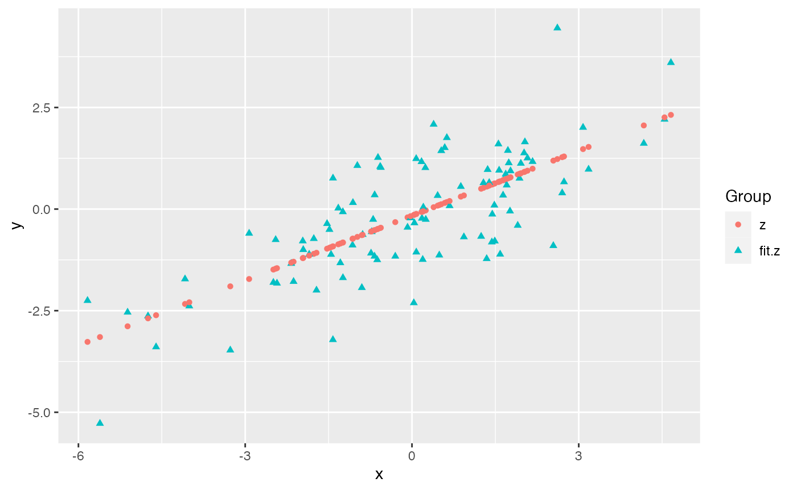
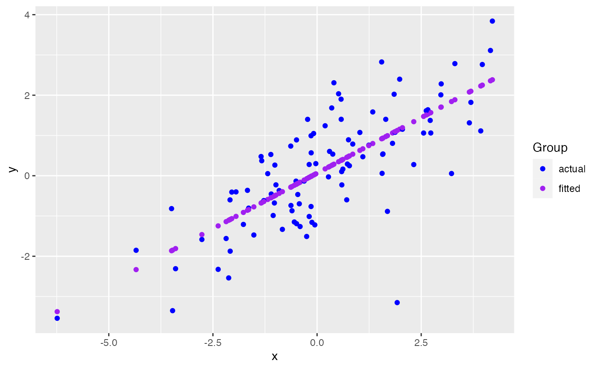
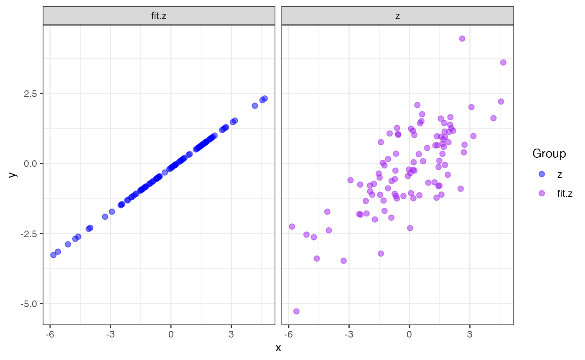

The ggmatplot package provides a quick and easy way of plotting the columns of two matrices against each other using ggplot2.
This vignette is aimed at providing a brief understanding of how the ggmatplot() function works and possible extensions to the plots created using ggmatplot. This will be discussed through the following examples.
point plotFirst we create two matrices as follows:
x: a vector/a single columned matrix
# matrix x
x <- rnorm(100, sd = 2)
head(x)
#> [1] -0.1669369 -0.0454744 -0.6811184 -1.7211406 -2.7038805 -1.5677691y: a matrix with two columns - z and fit.z
# matrix y
z <- x * 0.5 + rnorm(100, sd = 1)
fit.z <- fitted(lm(z ~ x))
y <- cbind(z, fit.z)
head(y)
#> z fit.z
#> 1 0.1105593 -0.008663807
#> 2 -0.3975294 0.056129980
#> 3 -0.8386536 -0.282952276
#> 4 -0.9001726 -0.837748806
#> 5 -3.0670010 -1.361988302
#> 6 0.4334538 -0.755933294ggmatplot() can be used to plot x against each column of y - x against z, and x against fit.z. This will be represented on the resulting plot as two groups, identified using different shapes and colors.
ggmatplot(x, y)
The default aesthetics used to differentiate the two groups can be updated using the ggmatplot() function parameters. Since the two groups in this example are differentiated using their shapes and colors, the shape and color parameters can be used to change them. If we want points in both groups to have the same shape, we can simply set the shape parameter to a single value. However, if we want the points in the groups to be differentiated by color, we can pass a list of colors as the color parameter - but we should make sure the number of colors in the list matches up with the number of groups.
ggmatplot(x, y,
shape = "circle", # using single shape over both groups
color = c("blue","purple") # assigning two colors to thw two groups
)
Since ggmatplot is built upon ggplot2 and creates a ggplot object, add on layers such as scales, themes and coordinate systems that can be layered over ggplot objects, can be used with plots created using ggmatplot too.
Each plot_type allowed by the ggmatplot() function is also built upon a ggplot2 geom(geometric object), and will therefore support additional parameters accepted by the underlying geom, although they are not listed as ggmatplot() function parameters.
ggmatplot(x, y,
shape = "circle", # using single shape over both groups
color = c("blue","purple"), # assigning new colors to groups
size = 2,
alpha = 0.5
) +
facet_wrap(~Group) +
theme_bw()
line plotWe have the following dataset of the monthly totals of international airline passengers(in thousands) from January 1949 to December 1960.
AirPassengers <- matrix(AirPassengers,
ncol = 12, byrow = FALSE,
dimnames = list(month.abb, as.character(1949:1960))
)
AirPassengers
#> 1949 1950 1951 1952 1953 1954 1955 1956 1957 1958 1959 1960
#> Jan 112 115 145 171 196 204 242 284 315 340 360 417
#> Feb 118 126 150 180 196 188 233 277 301 318 342 391
#> Mar 132 141 178 193 236 235 267 317 356 362 406 419
#> Apr 129 135 163 181 235 227 269 313 348 348 396 461
#> May 121 125 172 183 229 234 270 318 355 363 420 472
#> Jun 135 149 178 218 243 264 315 374 422 435 472 535
#> Jul 148 170 199 230 264 302 364 413 465 491 548 622
#> Aug 148 170 199 242 272 293 347 405 467 505 559 606
#> Sep 136 158 184 209 237 259 312 355 404 404 463 508
#> Oct 119 133 162 191 211 229 274 306 347 359 407 461
#> Nov 104 114 146 172 180 203 237 271 305 310 362 390
#> Dec 118 140 166 194 201 229 278 306 336 337 405 432If we want to plot the trend in the number of passengers over the years, we could break the data down into two matrices as follows:
months: a vector/single columned matrix containing the list of monthsnPassengers: a matrix of passenger numbers with each column representing a year
months <- rownames(AirPassengers)
nPassengers <- AirPassengers[, 1:12]Then we can use ggmatplot() to plot the months matrix against each column of the nPassengers matrix - which can be more simply understood as grouping the plot using each column(year) of the nPassengers matrix.
ggmatplot(
x = months,
y = nPassengers,
plot_type = "line",
size = 1,
legend_label = c(1949:1960),
xlab = "Month",
ylab = "Total airline passengers(in thousands)",
legend_title = "Year"
) +
theme_minimal()density plotNext we use a subset of the iris dataset to plot out the kernel density estimates of each variable. The data corresponds to 4 different measurements of the iris flowers.
iris_setosa <- subset(iris, Species == "setosa")
head(iris_setosa[,1:4])
#> Sepal.Length Sepal.Width Petal.Length Petal.Width
#> 1 5.1 3.5 1.4 0.2
#> 2 4.9 3.0 1.4 0.2
#> 3 4.7 3.2 1.3 0.2
#> 4 4.6 3.1 1.5 0.2
#> 5 5.0 3.6 1.4 0.2
#> 6 5.4 3.9 1.7 0.4The plot types density, histogram, violin and boxplot only accept a single matrix input. The plot will be grouped based on the columns of the single matrix input. Since we used a matrix with 4 columns, we can find 4 groups in the following density plot.
A transparent fill can be achieved by setting alpha = 0.
ggmatplot(iris_setosa[,1:4],
plot_type = "density",
xlab = "",
alpha = 0,
size = 1)If we want to scale the y axis to a maximum of 1, it can be achieved as follows:
Parameters accepted by the underlying geom - geom_density can also be used within the ggmatplot() function when using plot_type = "density".
ggmatplot(iris_setosa[,1:4],
plot_type = "density",
xlab = "",
position = "stack")